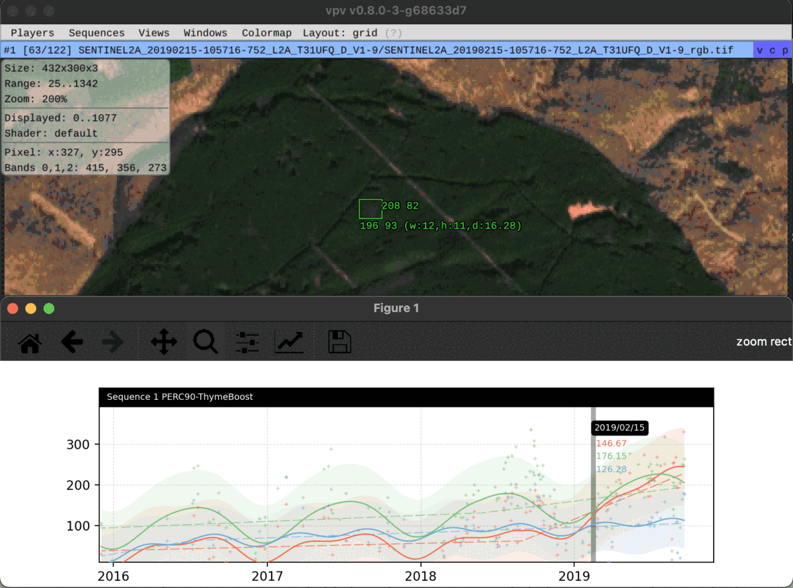

Visualisation et modélisation de séries temporelles
Développement d'un script Python intégré à vpv
Illustration du plug-in
Des images sentinel-2 prises dans l'Est de la france sont inspectées. On peut y voir une attaque de scolytes et le rougissement des arbres. La modélisation du plug-in permet de voir le changement de tendance de la bande rouge lors de l'attaque d'insectes.
- VPV
-
VPV est un software développé par Jérémy Anger dans le language Lua pour la visualisation avancée d'images.
- Plug-in
-
Le plug-in développé en Python permet de visualiser la série temporelle de la valeur moyenne du pixel dans le rectangle de sélection. Plusieurs processus sont disponibles pour traiter la série temporelle d'images satellites : filtration à un percentile pour enlever les images nuageuses, modélisation type BFAST pour analyser la tendance et saisonnalité de la végétation.